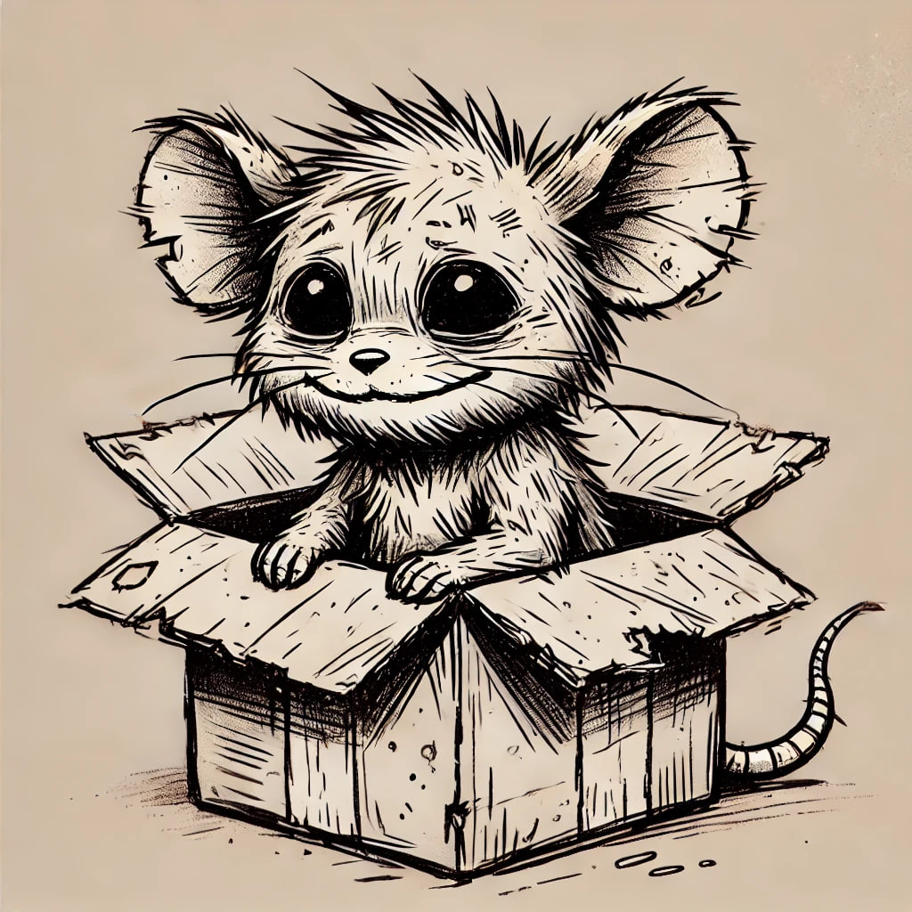

The Story of Ratatoot
Ratatoot is a washed-up degen rat who YOLO’d his entire bag aping into animal coins and rug-pulling politicians. Now he’s broke af, living in a cardboard box, but planning his comeback with his own meme token. Will he moon or stay rekt in the rat race forever?